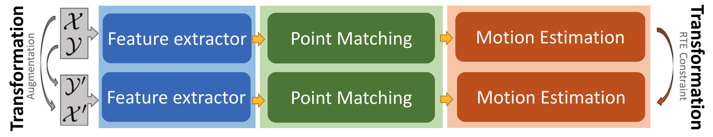
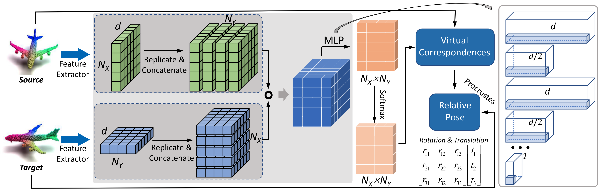

Network Architecture

Illustration of our proposed 3D point cloud registration framework (RTE-structure). First, we augment the input point clouds $\mathcal{X}$ and $\mathcal{Y}$ with random rigid transformations to $\mathcal{X}^\prime$ and $\mathcal{Y}^\prime$.
Then, two shared branches are used to estimate the relative poses $\mathbf{T}$ and $\mathbf{T}^\prime$� between $\{\mathcal{X},\mathcal{Y}\}$ and $\{\mathcal{X}^\prime,\mathcal{Y}^\prime\}$ respectively. Each branch network consists
of feature extractor, point matching, and motion estimation. The augmentation operation and the inherent RTE constraint, connect the input and output of the two branches respectively, where a closed-loop is constructed.
This explicit correlation provides a self-supervised loss function without any extra ground truth information. This RTEstructure can be integrated into other learning-based point cloud registration easily.

Illustration of the branch registration network architecture. First, we extract the point features for the source and target point clouds $\mathcal{X}$ and $\mathcal{Y}$. Then, in the matching
stage, we construct the LCV by replicating and concatenating the features. And the subsequent MLP and row-wise softmax are applied to regress the LCV to the matching matrix.
The virtual corresponding points to $\mathcal{X}$ are obtained by using matching matrix to perform the weighted average on $\mathcal{Y}$. Finally, the Procrustes algorithm is used to
estimate the rotation matrix $\mathbf{R}$ and translation vector $\mathbf{t}$. Right part shows the detailed matching matrix learning process.